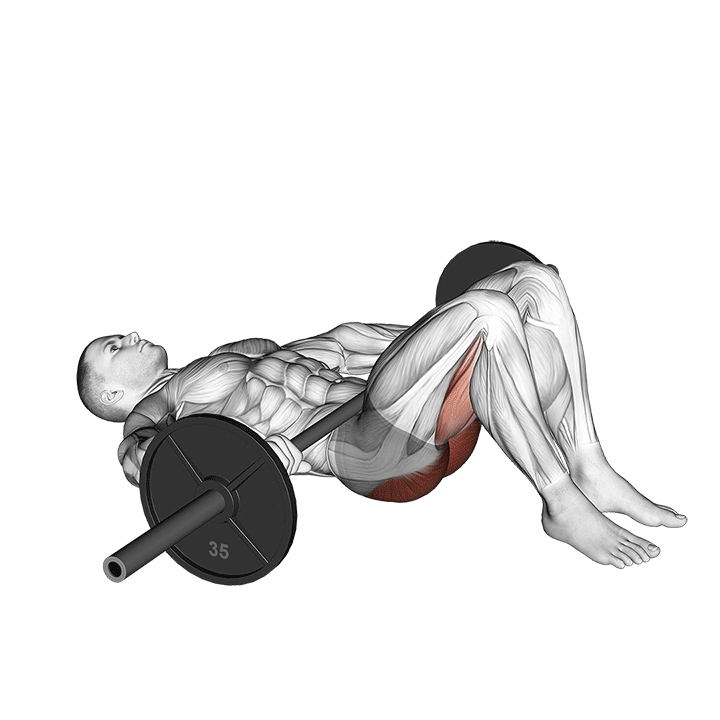

1. Hip Thrust
Ejercicio principal del día. Muy bueno para cargar glúteo con estabilidad y progresión.
Técnica clave: barbilla hacia abajo, costillas controladas y empuje fuerte con talones.
Tip: arriba busca extensión de cadera, no arquear la zona lumbar.
Error común: hiperextender la espalda arriba o perder tensión al bajar.
Registro
Sin registro guardado todavía.